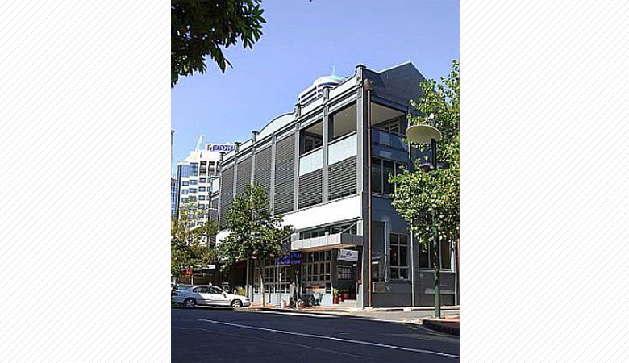
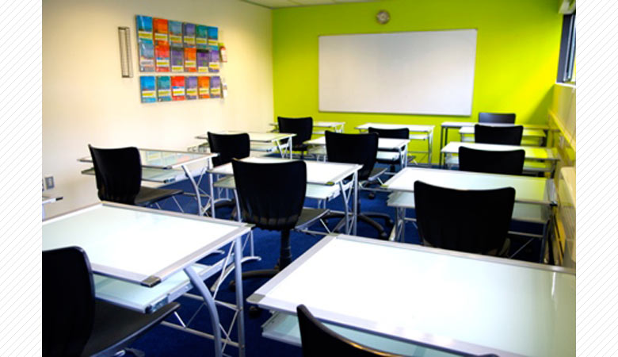
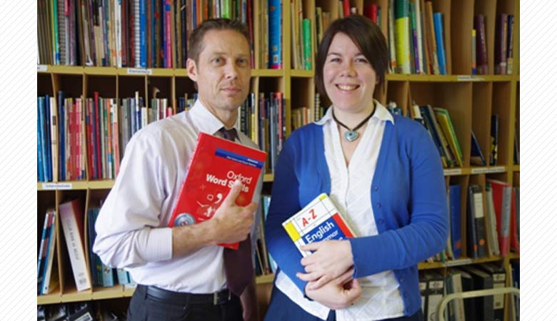
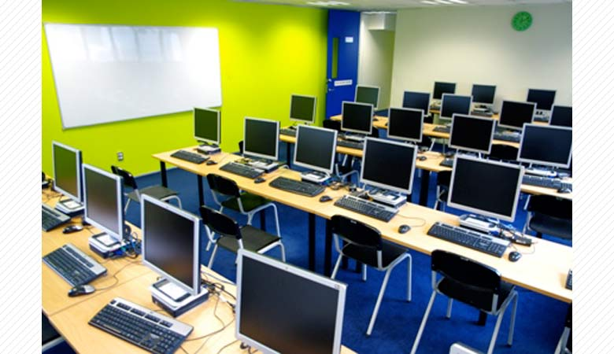
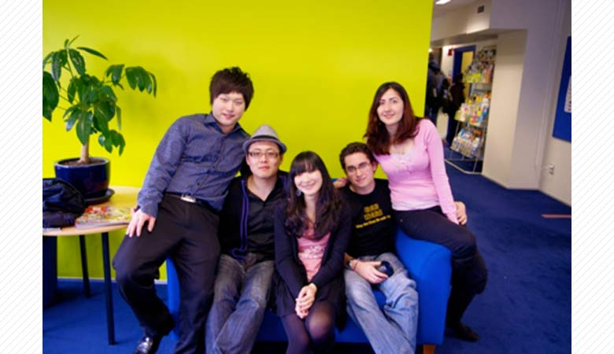
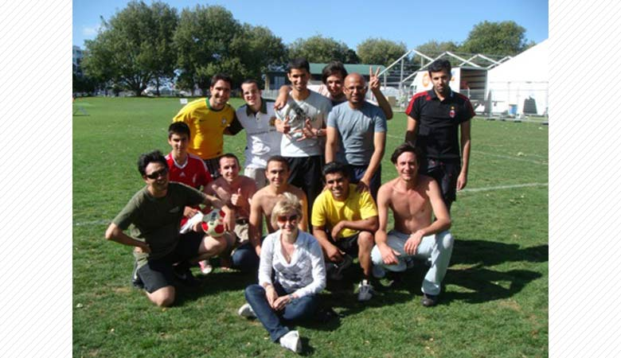
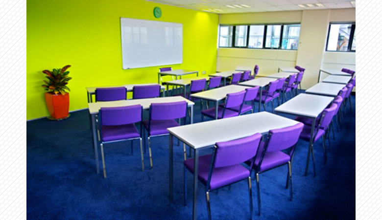
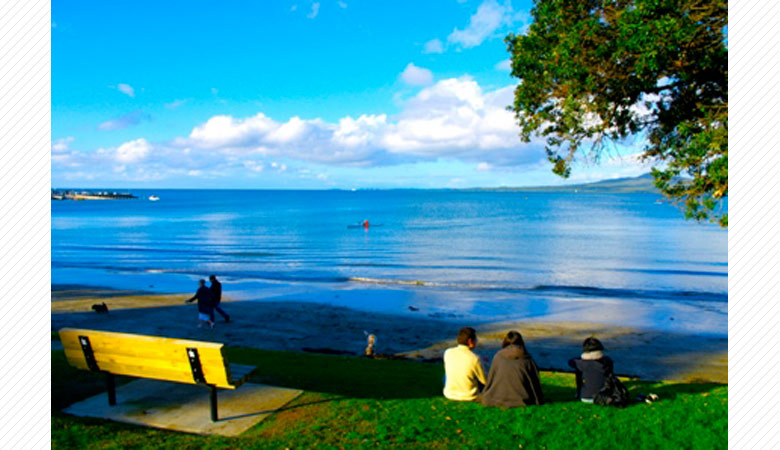

ニュージーランド政府認可校である当校は、この国で最も伝統ある語学学校です。
English NZの加盟校でもあるだけに、しっかりしたプログラムに定評があります。
一般英語には、実践的な英語スキルを上達させる為、コミュニケーション中心としながら全てのスキルをバランス良く行う
システムを採用しており、細かなレベル分け、目的別に分かれたコース選択肢、充実した施設、質の高い講師陣、豊かな国籍など、
どの点をとっても満足されること間違いないでしょう。

初心者の方でも安心して学べるよう、少人数制のクラスで、放課後3：30～４：３０に、Study Clubという英語補修クラスも
月曜日から木曜日まで準備されており、 個人個人の弱点や目的に合わせて無料で講師がサポートをしてくれます。

入学初日、レベルテストを行い学生様に合ったレベル・コースでスタートしていただくことができます。
1週間目にそのクラスが自分に合っているか、また生活面でも困ったことがないか、フレンドリーなスタッフとカウンセリングを行います。

ほとんどのコースが金曜日の放課後のTOEICコースとの組み合わせが可能となっているのも大きな魅力です。
当校の学生であればこのTOEICコースは無料で受講していただくことができます。
進学希望の方はいくつかのレベルに分かれているIELTSコースがあり、いくつもの専門学校、ポリテクニックなどに
IELTSなしで入学できるシステムがこの学校の質の高さを証明しています。

海外や日本で英語を使って仕事をされたい方のためのオフィス英語コースや児童英語講師講座、ファームステイ英語、ケンブリッジコースなど
様々なコースを準備してくれているので、自分の目標に合わせてプログラムを組むことが可能です。
入学してからも随時、自分の上達に合わせてコース選択が相談できます。

また、もう１つ、人気の理由は、アクティビティーが充実していることです。
（例：月曜日-サッカー、火曜日-ビリヤード、水曜日-映画鑑賞、木曜日-パブコンバセーション、金曜日-スクールパーティー、観光など）
週末には、日帰りのものから泊りがけのものまで毎週末２－３つのツアーが準備されていますので、NZを満喫していただくことができます。

一般英語 フルタイム/パートタイム （１週間～）
ALCの一般英語コースは、入門から上級までしっかりとした6つのレベルに分かれており
自分のレベルに合わせて受講していただくことができます。

NZLC City Link
ニュージーランドを思いっきり満喫したいなら、NZLC City Linkがお勧めです。
オークランド、クライストチャーチ、ウェリントンのニュージーランド３大人気都市に学校を持つNZLCならではのプログラムです。